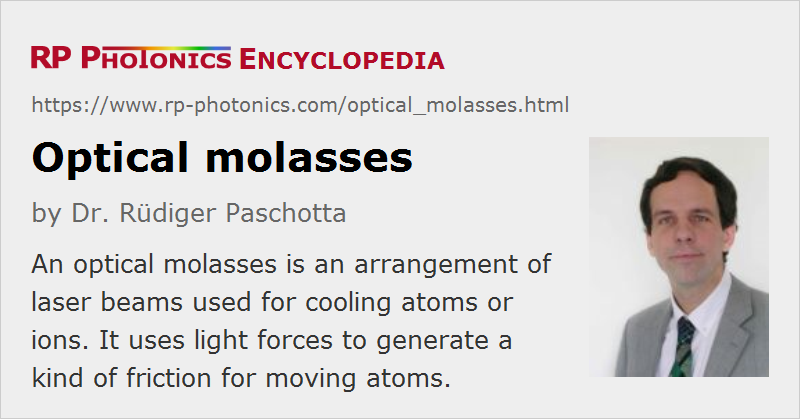

Optical Molasses
Definition: an arrangement of laser beams used for cooling atoms or ions
German: optische Molasse
How to cite the article; suggest additional literature
Author: Dr. Rüdiger Paschotta
An optical molasses is a single-frequency light field which can be used to dampen atomic motion, based on the mechanism of Doppler cooling (one variant of laser cooling).
In a simple one-dimensional version, an optical molasses is made with two counterpropagating laser beams, the frequency of which is tuned slightly below an atomic absorption resonance. As a result, a motion of an atom (or ion) in the direction of one of the beams will lead to a Doppler shift so that the absorption rate for the counterpropagating beam is increased, whereas the absorption rate for the opposite laser beam is reduced. Effectively there is a dissipative light force which is always directed opposite to the motion and therefore serves to reduce that motion.
A three-dimensional optical molasses can be made of six laser beams, propagating e.g. in the +X, −X, +Y, −Y, +Z, and −Z directions. Such an arrangement can reduce the motion in any direction of space. It can therefore effectively reduce the temperature of an atomic (or ion) cloud.
It is also possible to use different frequencies of the counterpropagating beams, effectively generating a moving optical molasses which tends to bring the particle velocities toward a certain value. Through the Doppler shift, particles moving with that velocity experience equal frequencies of all the waves.
Questions and Comments from Users
Here you can submit questions and comments. As far as they get accepted by the author, they will appear above this paragraph together with the author’s answer. The author will decide on acceptance based on certain criteria. Essentially, the issue must be of sufficiently broad interest.
Please do not enter personal data here; we would otherwise delete it soon. (See also our privacy declaration.) If you wish to receive personal feedback or consultancy from the author, please contact him e.g. via e-mail.
By submitting the information, you give your consent to the potential publication of your inputs on our website according to our rules. (If you later retract your consent, we will delete those inputs.) As your inputs are first reviewed by the author, they may be published with some delay.
Bibliography
| [1] | S. Chu et al., “Three-dimensional viscous confinement and cooling of atoms by resonance radiation pressure”, Phys. Rev. Lett. 55 (1), 48 (1985), doi:10.1103/PhysRevLett.55.48 |
| [2] | P. D. Lett et al., “Optical molasses”, J. Opt. Soc. Am. B 6 (11), 2084 (1989), doi:10.1364/JOSAB.6.002084 |
See also: Doppler cooling, laser cooling
and other articles in the category quantum optics
|  |
If you like this page, please share the link with your friends and colleagues, e.g. via social media:
These sharing buttons are implemented in a privacy-friendly way!